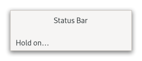

Gtk.Statusbar¶
Example¶
- Subclasses:
None
Methods¶
- Inherited:
Gtk.Widget (181), GObject.Object (37), Gtk.Accessible (16), Gtk.Buildable (1)
- Structs:
class |
|
|
|
|
|
|
|
|
|
|
Virtual Methods¶
- Inherited:
Gtk.Widget (25), GObject.Object (7), Gtk.Accessible (6), Gtk.Buildable (9)
Properties¶
- Inherited:
Signals¶
- Inherited:
Name |
Short Description |
|---|---|
Emitted whenever a new message is popped off a statusbar’s stack. |
|
Emitted whenever a new message gets pushed onto a statusbar’s stack. |
Fields¶
- Inherited:
Class Details¶
- class Gtk.Statusbar(**kwargs)¶
- Bases:
- Abstract:
No
A
GtkStatusbarwidget is usually placed along the bottom of an application’s main [class`Gtk`.Window].An example
Gtk.StatusbarA
GtkStatusBarmay provide a regular commentary of the application’s status (as is usually the case in a web browser, for example), or may be used to simply output a message when the status changes, (when an upload is complete in an FTP client, for example).Status bars in GTK maintain a stack of messages. The message at the top of the each bar’s stack is the one that will currently be displayed.
Any messages added to a statusbar’s stack must specify a context id that is used to uniquely identify the source of a message. This context id can be generated by [method`Gtk`.Statusbar.get_context_id], given a message and the statusbar that it will be added to. Note that messages are stored in a stack, and when choosing which message to display, the stack structure is adhered to, regardless of the context identifier of a message.
One could say that a statusbar maintains one stack of messages for display purposes, but allows multiple message producers to maintain sub-stacks of the messages they produced (via context ids).
Status bars are created using [ctor`Gtk`.Statusbar.new].
Messages are added to the bar’s stack with [method`Gtk`.Statusbar.push].
The message at the top of the stack can be removed using [method`Gtk`.Statusbar.pop]. A message can be removed from anywhere in the stack if its message id was recorded at the time it was added. This is done using [method`Gtk`.Statusbar.remove].
- CSS node
GtkStatusbarhas a single CSS node with namestatusbar.Deprecated since version 4.10: This widget will be removed in GTK 5
- classmethod new()[source]¶
- Returns:
the new
GtkStatusbar- Return type:
Creates a new
GtkStatusbarready for messages.Deprecated since version 4.10: This widget will be removed in GTK 5
- get_context_id(context_description)[source]¶
- Parameters:
context_description (
str) – textual description of what context the new message is being used in- Returns:
an integer id
- Return type:
Returns a new context identifier, given a description of the actual context.
Note that the description is not shown in the UI.
Deprecated since version 4.10: This widget will be removed in GTK 5
- pop(context_id)[source]¶
- Parameters:
context_id (
int) – a context identifier
Removes the first message in the
GtkStatusbar’s stack with the given context id.Note that this may not change the displayed message, if the message at the top of the stack has a different context id.
Deprecated since version 4.10: This widget will be removed in GTK 5
- push(context_id, text)[source]¶
- Parameters:
context_id (
int) – the message’s context id, as returned byGtk.Statusbar.get_context_id()text (
str) – the message to add to the statusbar
- Returns:
a message id that can be used with [method`Gtk`.Statusbar.remove].
- Return type:
Pushes a new message onto a statusbar’s stack.
Deprecated since version 4.10: This widget will be removed in GTK 5
Signal Details¶
- Gtk.Statusbar.signals.text_popped(statusbar, context_id, text)¶
- Signal Name:
text-popped- Flags:
- Parameters:
statusbar (
Gtk.Statusbar) – The object which received the signalcontext_id (
int) – the context id of the relevant message/statusbartext (
str) – the message that was just popped
Emitted whenever a new message is popped off a statusbar’s stack.
Deprecated since version 4.10: This widget will be removed in GTK 5
- Gtk.Statusbar.signals.text_pushed(statusbar, context_id, text)¶
- Signal Name:
text-pushed- Flags:
- Parameters:
statusbar (
Gtk.Statusbar) – The object which received the signalcontext_id (
int) – the context id of the relevant message/statusbartext (
str) – the message that was pushed
Emitted whenever a new message gets pushed onto a statusbar’s stack.
Deprecated since version 4.10: This widget will be removed in GTK 5